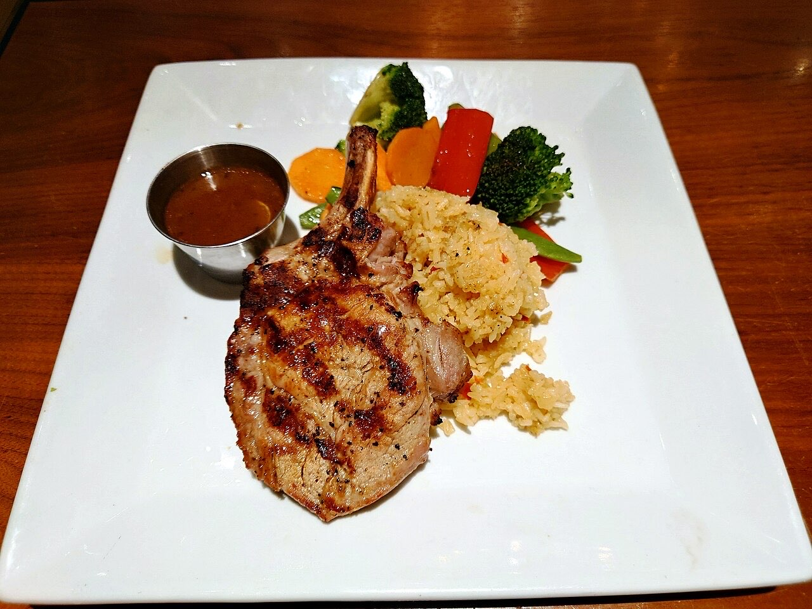
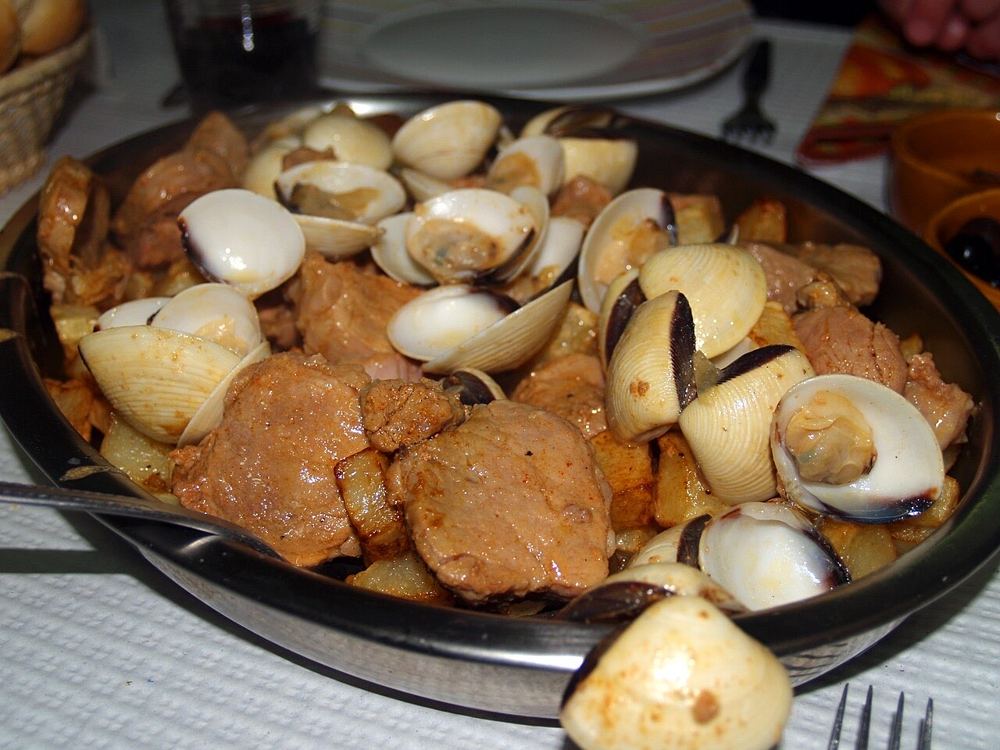

Fotografias ilustrativas — no site final usamos as vossas.
Churrasqueira · Centro
Francesinha perto do Toural
A pedida para quem tem fome a sério.
Ementa do dia ao almoço, em dias úteis.
Por QR code, sem esperar pela equipa.
A Churrasqueira do Toural fica na Travessa de Camões, mesmo ao lado do Largo do Toural, no centro de Guimarães. Venha almoçar a ementa do dia ou provar a Francesinha Especial.


Fotografias ilustrativas — no site final usamos as vossas.
Novo · Pedidos por QR code
Menos espera nas horas de ponta, menos enganos nos pedidos e a equipa livre para servir.
Pedido de reserva
Escolha o dia e a hora — o pedido chega por WhatsApp e confirmamos logo.
↑ Assim chegaria a mensagem ao vosso WhatsApp. (Nesta demonstração nada é enviado.)
Onde estamos
| Seg–Sáb | 09:00–02:00 |
|---|---|
| Dom | Encerrado |
Proposta para Churrasqueira do Toural
Esta página foi feita de propósito para Churrasqueira do Toural por João Machado, programador web aqui de Guimarães. Inclui:
Eu trato do alojamento e da manutenção. Sem compromisso.